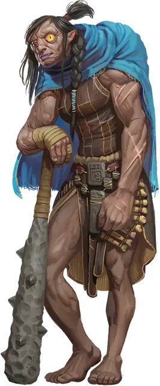

Фомор колдун Тьмы
Fomorian Warlock of the Dark
Огромный Великан, любое мировоззрение

Класс Доспеха 15 (природный доспех)
Хиты 207 (18к12 + 90)
Скорость 30 футов
| мод | спас | ||
|---|---|---|---|
| СИЛ | 23 | +6 | +6 |
| ЛОВ | 13 | +1 | +1 |
| ТЕЛ | 20 | +5 | +5 |
| мод | спас | ||
|---|---|---|---|
| ИНТ | 9 | −1 | −1 |
| МДР | 14 | +2 | +6 |
| ХАР | 18 | +4 | +8 |
Навыки Восприятие +6, Магия +3, Скрытность +5
Чувства тёмное зрение 120 футов, пассивное Восприятие 16
Языки Великаний, Подземный
Опасность 12 (8400 опыта)
Бонус мастерства +4
Особенности
Кровавая руна. У фомора есть руна крови, начертанная на эффигии или каком-либо другом предмете, находящемся в его распоряжении. Держа в руках или надевая предмет с руной, великан может использовать свое действие Разрушающее проклятие и реакцию Отравляющее возмездие.
Предмет, на котором нанесена Кровавая руна, имеет КД 15; 30 хитов; и иммунитет к урону некротической и психической энергией, а так же ядом. Предмет восстанавливает все свои хиты в конце каждого хода, но он превращается в пыль, если его хиты уменьшаются до 0 или когда умирает фомор. Если руна уничтожена, фомор может начертать Кровавую руну на предмете, находящемся в его распоряжении, когда он заканчивает короткий или продолжительный отдых.
Дьявольское зрение. Магическая тьма не мешает темному зрению фомора.
Легендарное сопротивление (3/день). Если фомор проваливает спасбросок, он может вместо этого сделать спасбросок успешным.
Действия
Мультиатака. Фомор совершает три атаки Палицей. Если у фомора есть Кровавая руна, он может заменить одну из этих атак использованием Разрушающего проклятья.
Палица. . Рукопашная атака оружием: +10 к попаданию, досягаемость 15 футов, одна цель. Попадание: 19 (3к8 + 6) дробящего урона плюс 7 (2к6) урона некротической энергией.
Разрушающее проклятие (требуется Кровавая руна). Фомор нацеливается на одно существо, которое он может видеть в пределах 60 футов от себя. Цель должна преуспеть в спасброске Харизмы Сл 16, иначе получит 27 (6к8) урона некротической энергией и станет проклятой на 24 часа. У проклятой цели скорость уменьшается на половину, и если она пытается наложить заклинание, сначала она должна преуспеть в проверке Интеллекта Сл 16, иначе заклинание не сработает, а ячейка будет потрачено впустую.
Жуткий взрыв. Магическая энергия взрывается в сфере радиусом 20 футов, с центром в точке, которую фомор может видеть в 120 футах. Каждое существо в этой области должно совершить спасбросок Ловкости Сл 16. В случае провала существо получает 32 (5к12) урона силовым полем и падает ничком. В случае успеха существо получает только половину этого урона.
Использование заклинаний. Фомор накладывает одно из следующих заклинаний, используя Харизму в качестве базовой характеристики (Сл спасброска от заклинаний 16):
• Неограниченно: обнаружение магии [detect magic], левитация [levitate], волшебная рука [mage hand], фокусы [prestidigitation];
• 1/денькаждого: обнаружение мыслей [detect thoughts], внушение [suggestion], телекинез [telekinesis].
Бонусные действия
Стелющаяся тьма (перезарядка 6). Фомор на мгновение призывает всепоглощающую тьму в сфере радиусом 30 футов с центром в точке, которую он может видеть на расстоянии 120 футов. Каждое существо в этой области должно преуспеть в спасброске Телосложение Сл 16, иначе получит 11 (2к10) урона некротической энергией и становится ослепленным до конца своего следующего хода.
Реакции
Отравляющее возмездие (требуется Кровавая руна). В ответ на нанесение урона существом, которое фомор может видеть в пределах 60 футов, от себя фомор заставляет это существо совершить спасбросок Телосложения Сл 16; в случае провала существо становится отравленным до конца своего следующего хода.
Описание
Происходящие от сына Аннама - Каронтора, фоморы когда-то занимали место в иерархии великанов между холмовыми и каменными великанами. В древние времена они были знатоками магии, известными своим острым интеллектом, но также и своим раздутым эго и чувством собственного достоинства. Каронтор воспользовался этими качествами, соблазняя их обещаниями более высокого положения в Уложении, и подстрекнул своих потомков начать наступление на Царство Фей. Когда атака провалилась, фоморы были изгнаны в Подземье, а их бог заключен в подземную тюрьму. Подвергнувшись странной магии Подземья, тела и души фоморов искажались, пока они не стали современными фоморами.
Фомор колдун Тьмы
Некоторые фоморы ищут мистической славы, которой обладал их род до их изгнания в Подземье. Они заключают магические договоры с сущностями тьмы — возможно, могущественными феями из Сумрачного Двора или сверхъестественными существами, похороненными глубоко в Подземье. Эти договоры дают этим фоморам власть над тенями, позволяя им лепить тьму, как глину.